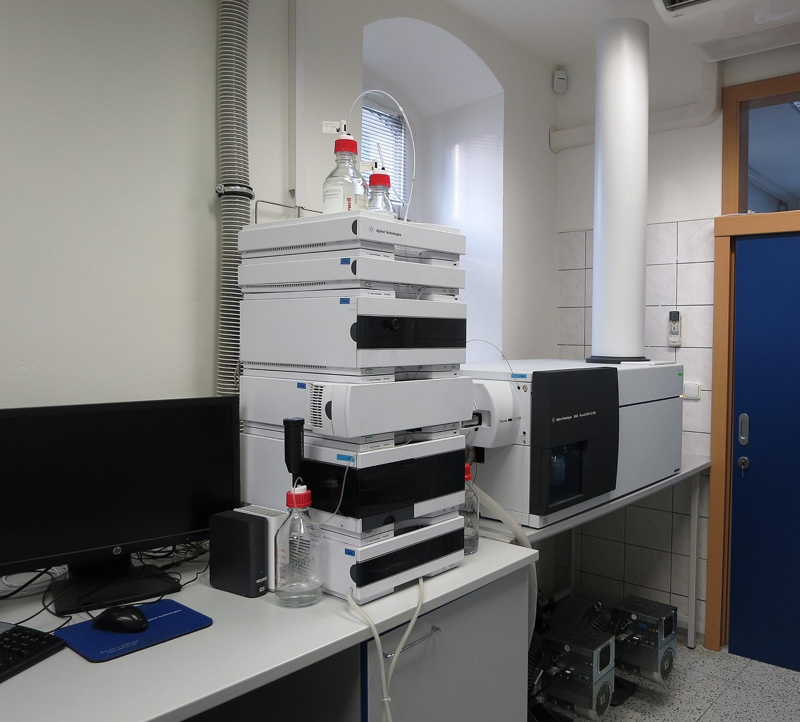
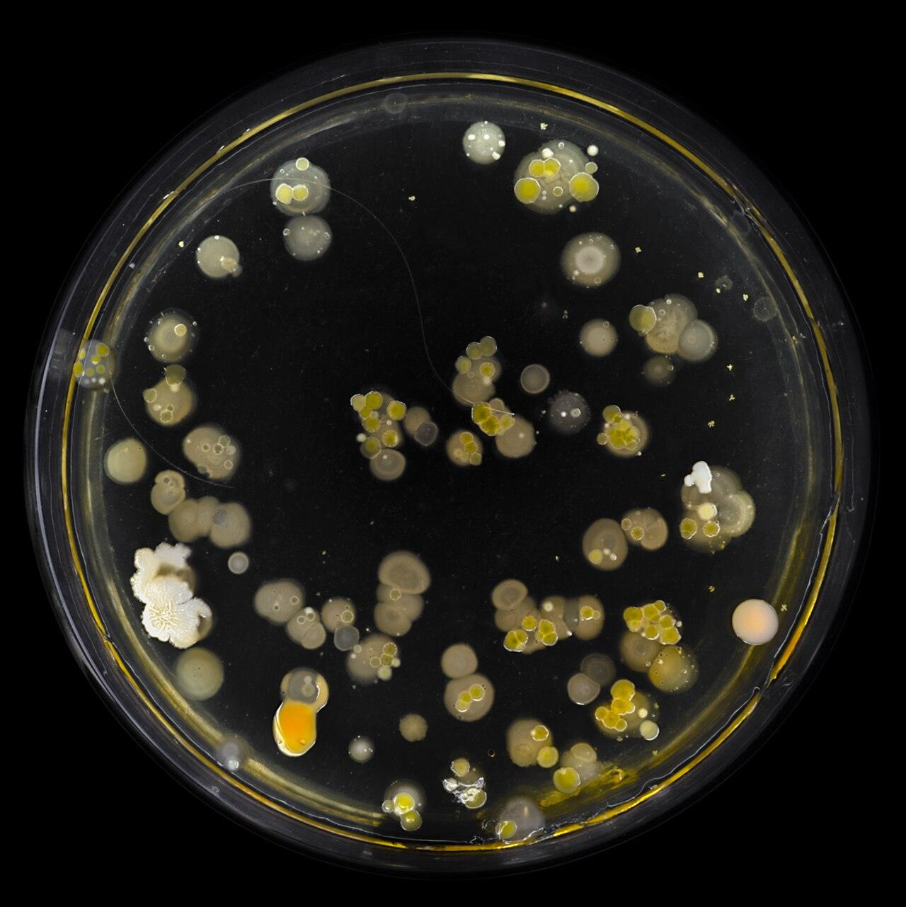
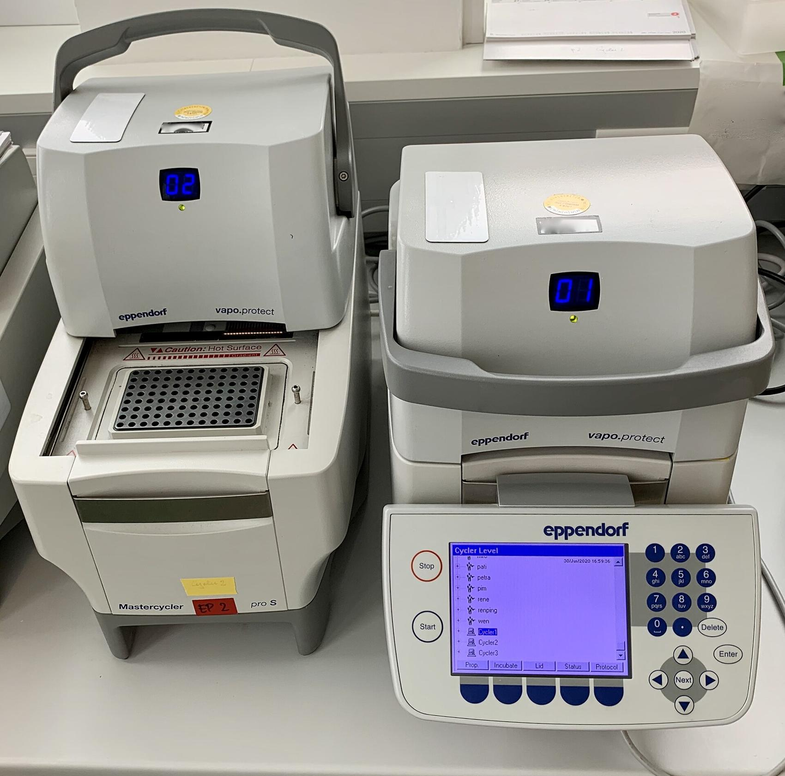
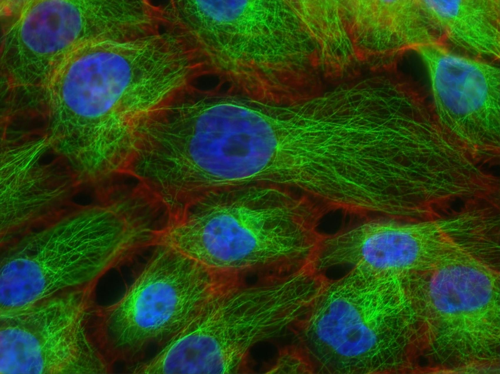

The short answer
The Method Library is our public catalogue of pharmaceutical test methods. Each entry explains what the test is for, how it works, which pharmacopoeia chapters and ICH guidelines apply, how much sample we need, typical turnaround and what you receive. It covers 46 methods today and is growing towards 500.
ChromatographyHPLC assay and related substancesHPLC assay and related substances testing measures how much active ingredient a drug product contains and which impurities are present, against the limits in its specification or monograph.USP <621> · Ph. Eur. 2.2.46 · JP 2.013 to 7 business daysChromatographyUHPLC impurity profilingUHPLC impurity profiling separates and quantifies low-level impurities and degradation products with higher resolution and shorter run times than conventional HPLC.USP <621> · Ph. Eur. 2.2.46 · ICH Q3A(R2)3 to 7 business daysDissolution and performanceDissolution testingDissolution testing measures how quickly and completely the drug is released from a tablet or capsule into a defined medium, which is a release test and a surrogate for in vivo performance.USP <711> · USP <724> · USP <1092>2 to 5 business daysChromatographyContent uniformityContent uniformity confirms that each individual dosage unit contains close to the labelled amount of drug, using the harmonised acceptance value approach.USP <905> · Ph. Eur. 2.9.40 · JP 6.022 to 5 business daysChromatographyResidual solvents by headspace GCResidual solvents testing measures organic solvents left over from manufacture against the Class 1, 2 and 3 limits in ICH Q3C.USP <467> · Ph. Eur. 2.4.24 · ICH Q3C3 to 6 business daysMass spectrometryElemental impurities by ICP-MSElemental impurities testing quantifies metals such as lead, arsenic, cadmium and mercury against the permitted daily exposures in ICH Q3D, using ICP-MS.USP <232> · USP <233> · ICH Q3D(R2)4 to 8 business daysMass spectrometryNitrosamines and NDSRIs by LC-MS/MSNitrosamine testing detects and quantifies N-nitrosamines, including nitrosamine drug substance-related impurities (NDSRIs), at the low ng/g levels needed to meet regulator acceptable intakes.ICH M7(R2) · Ph. Eur. 2.5.42 · USP <1469>5 to 10 business days (Critical tier available)Mass spectrometryMutagenic (genotoxic) impuritiesMutagenic impurity testing measures DNA-reactive impurities such as alkyl sulfonates, alkyl halides and epoxides at trace levels set by the ICH M7 threshold of toxicological concern.ICH M7(R2) · ICH Q3A(R2) · ICH Q2(R2)2 to 4 weeks including method developmentPhysical and solid stateXRPD polymorph identificationX-ray powder diffraction identifies the crystalline form of an API or excipient and detects unwanted polymorphs, which can change solubility, stability and bioavailability.USP <941> · Ph. Eur. 2.9.333 to 5 business daysPhysical and solid stateParticle size by laser diffractionLaser diffraction measures the particle size distribution of APIs and excipients, reported as Dv10, Dv50 and Dv90, which affects dissolution, content uniformity and processability.USP <429> · Ph. Eur. 2.9.31 · ISO 133202 to 4 business daysPhysical and solid stateWater content by Karl FischerKarl Fischer titration measures water content in APIs, excipients and drug products, a common specification for stability and handling.USP <921> · Ph. Eur. 2.5.12 · Ph. Eur. 2.5.321 to 3 business daysSpectroscopyFTIR identificationFTIR identification confirms that a raw material, API or excipient is what it claims to be by matching its infrared spectrum to a reference.USP <197> · USP <854> · Ph. Eur. 2.2.241 to 2 business daysSpectroscopyRaman identificationRaman spectroscopy confirms material identity quickly, often through transparent packaging, which makes it useful for 100% incoming raw material checks.USP <858> · USP <1858> · Ph. Eur. 2.2.481 to 2 business daysStabilityICH stability storage and testingICH stability studies store product at defined temperature and humidity conditions and test it at set intervals to support a shelf life and storage statement.ICH Q1A(R2) · ICH Q1E · ICH Q5CPull to report in 5 to 10 business daysStabilityPhotostability (ICH Q1B)Photostability testing shows whether light exposure changes a drug substance or product, and whether light-protective packaging is needed.ICH Q1B2 to 3 weeksStabilityForced degradation studiesForced degradation deliberately stresses a drug with acid, base, oxidation, heat, humidity and light to reveal its degradation pathways and prove a method is stability-indicating.ICH Q1A(R2) · ICH Q1B · ICH Q2(R2)2 to 4 weeksChromatographySEC-HPLC for aggregates and fragmentsSize-exclusion chromatography measures monomer purity, aggregates and fragments of monoclonal antibodies and other proteins, a critical quality attribute for safety and efficacy.USP <129> · Ph. Eur. 2.2.30 · ICH Q6B3 to 5 business daysChromatographyCE-SDS purity (reduced and non-reduced)CE-SDS measures the size purity of proteins under reducing and non-reducing conditions, detecting fragments, non-glycosylated heavy chain and incompletely assembled antibody.USP <129> · Ph. Eur. 2.2.47 · ICH Q6B3 to 5 business daysChromatographyicIEF charge variantsImaged capillary isoelectric focusing separates charge variants of a protein by isoelectric point, measuring the acidic, main and basic species that reflect deamidation, C-terminal lysine and other modifications.Ph. Eur. 2.2.54 · USP <1054> · ICH Q6B3 to 5 business daysMass spectrometryPeptide mapping by LC-MSPeptide mapping confirms a protein's amino acid sequence and locates post-translational modifications such as oxidation, deamidation and glycosylation sites.USP <1055> · Ph. Eur. 2.2.55 · ICH Q6B1 to 2 weeksMass spectrometryIntact and subunit mass analysisIntact and subunit mass analysis measures the molecular mass of a protein or its chains to confirm identity and reveal major modifications such as glycoforms and clipping.ICH Q6B · Ph. Eur. 2.2.433 to 7 business daysChromatographyReleased N-glycan profiling (HILIC)Glycan profiling measures the N-linked sugar structures on a glycoprotein, which influence effector function, half-life and immunogenicity.USP <212> · Ph. Eur. 2.2.59 · ICH Q6B1 to 2 weeksCell-basedCell-based potency bioassayA cell-based potency assay measures the biological activity of a product relative to a reference standard, using a cellular response that reflects its mechanism of action.USP <1032> · USP <1033> · USP <1034>2 to 4 weeksImmunoassayHost cell protein ELISAHost cell protein testing measures residual proteins from the production cell line, an impurity that must be reduced to low levels for safety.USP <1132> · Ph. Eur. 2.6.34 · ICH Q6B3 to 7 business daysMolecular biologyResidual host cell DNA by qPCRResidual DNA testing quantifies host cell DNA left in a biological product, commonly against the WHO limit of 10 ng per parenteral dose for continuous cell lines.USP <509> · Ph. Eur. 2.6.35 · WHO TRS 978 Annex 33 to 7 business daysMolecular biologymRNA integrity by capillary electrophoresismRNA integrity testing measures the percentage of full-length mRNA versus fragments, which is a critical quality attribute because only intact transcripts produce the full protein.USP mRNA vaccine quality guidance · WHO mRNA vaccine guidelines · ICH Q6B (principles)3 to 5 business daysMass spectrometrymRNA 5' capping efficiency by LC-MSCapping efficiency testing measures what fraction of mRNA molecules carry the 5' cap structure needed for translation and to avoid innate immune recognition.USP mRNA vaccine quality guidance · WHO mRNA vaccine guidelines · ICH Q6B (principles)5 to 8 business daysMass spectrometryPoly(A) tail length and distributionPoly(A) tail analysis measures the length and heterogeneity of the 3' poly(A) tail, which affects mRNA stability and translation.USP mRNA vaccine quality guidance · WHO mRNA vaccine guidelines · ICH Q6B (principles)5 to 8 business daysImmunoassayResidual dsRNAResidual double-stranded RNA testing measures dsRNA by-products of in vitro transcription, which can trigger innate immune responses and reduce protein expression.USP mRNA vaccine quality guidance · WHO mRNA vaccine guidelines · ICH Q6B (principles)3 to 6 business daysPhysical and solid stateLNP size and polydispersity (DLS)Dynamic light scattering measures the mean size and polydispersity index of lipid nanoparticles, which influence delivery, biodistribution and stability.ISO 22412 · USP mRNA vaccine quality guidance2 to 4 business daysImmunoassayEncapsulation efficiency (RiboGreen)Encapsulation efficiency measures what percentage of the mRNA in a product is protected inside the lipid nanoparticle rather than free in solution.USP mRNA vaccine quality guidance · WHO mRNA vaccine guidelines · ICH Q6B (principles)2 to 4 business daysMolecular biologyVector genome titre by ddPCRDroplet digital PCR measures the number of vector genomes in an AAV or lentiviral product, which sets the dose given to patients.USP <1047> · Ph. Eur. 5.143 to 7 business daysPhysical and solid stateAAV empty/full ratio by AUCAnalytical ultracentrifugation measures the proportion of AAV capsids that are empty, partially filled or full, an important purity and potency attribute.USP <1047> · Ph. Eur. 5.141 to 2 weeksCell-basedFlow cytometry identity and purityFlow cytometry confirms the identity, purity and viability of cell therapy products such as CAR-T by measuring surface markers on individual cells.USP <1027> · Ph. Eur. 2.7.241 to 2 business days (same day available)MicrobiologySterility test (membrane filtration)The sterility test checks that a sterile product contains no viable micro-organisms, using the harmonised compendial method.USP <71> · Ph. Eur. 2.6.1 · JP 4.0614 days incubation plus 1 to 2 days to reportMicrobiologyBacterial endotoxins (LAL)The bacterial endotoxins test detects and quantifies endotoxin from Gram-negative bacteria, which can cause fever and shock if injected.USP <85> · Ph. Eur. 2.6.14 · JP 4.011 to 3 business daysMicrobiologyEndotoxin by recombinant reagents (rFC)Recombinant factor C testing detects endotoxin with a reagent made without horseshoe crab blood, and is not affected by beta-glucans.Ph. Eur. 2.6.32 · USP <86>1 to 3 business daysMolecular biologyMycoplasma by culture and NATMycoplasma testing detects contamination of cell banks, harvests and cell therapy products by mycoplasmas, which are too small to be removed by standard filters.Ph. Eur. 2.6.7 · USP <63> · JP 18 G3NAT 1 to 2 days, culture 28 daysMicrobiologyBioburden and microbial limitsBioburden testing counts the micro-organisms in non-sterile products and pre-filtration samples and checks for specified organisms such as E. coli.USP <61> · USP <62> · Ph. Eur. 2.6.125 to 8 business daysPhysical and solid stateContainer closure integrityContainer closure integrity testing shows that a vial, syringe or other package keeps out micro-organisms and gases throughout shelf life.USP <1207> · USP <1207.1> · USP <1207.2>1 to 3 weeksSpectroscopyWater testing: TOC and conductivityTotal organic carbon and conductivity testing check that purified water and water for injection meet compendial quality, as part of environmental and utility monitoring.USP <643> · USP <645> · Ph. Eur. 2.2.441 to 3 business daysMass spectrometryExtractables study (GC-MS, LC-MS, ICP-MS)An extractables study identifies the chemicals that can be pulled from packaging or manufacturing components under exaggerated conditions, to predict what may leach into a product.USP <1663> · USP <661.1> · USP <661.2>4 to 8 weeksMass spectrometryLeachables on stabilityA leachables study measures which compounds actually migrate from packaging into a drug product during storage, using targeted methods built from the extractables data.USP <1664> · ICH Q3E (draft)Method set-up 4 to 6 weeks, then per pullMass spectrometryLC-MS/MS pharmacokinetic assayAn LC-MS/MS PK assay measures drug or metabolite concentrations in plasma, serum or tissue, so that exposure can be related to dose in clinical and nonclinical studies.ICH M10Validation 3 to 6 weeks; sample analysis per batch in 1 to 2 weeksImmunoassayAnti-drug antibody (ADA) bridging assayAn ADA assay detects antibodies a patient makes against a biologic drug, using a tiered approach of screening, confirmation and titre.FDA immunogenicity testing guidance (2019) · EMA immunogenicity guideline · USP <1106>Validation 4 to 8 weeks; samples per batch 1 to 2 weeksCell-basedNeutralising antibody (NAb) assayA neutralising antibody assay shows whether ADA detected in a patient block the drug's biological activity.FDA immunogenicity testing guidance (2019) · USP <1106.1>Validation 6 to 10 weeks; samples per batch 2 weeks
No method matches. Ask us anyway: we run many methods that are not listed yet.
Browse by technique
Ten technique families, one data standard.








An analyst reviewing data at a computer in a laboratory
How to read a method page
- The short answer says what the test is for in one or two sentences.
- Spec sheet lists the pharmacopoeia chapters, sample amount, turnaround and instruments.
- Validation status shows our target accreditation scope. Until a site holds it, it is marked as a placeholder.
- Request this test opens a quote request with the method already filled in.
Placeholder status Validation and accreditation status per method is a target until each site's scope is issued. Turnaround times are indicative business days after sample receipt. Compendial chapter numbers are cited as commonly referenced; always check the current official edition.